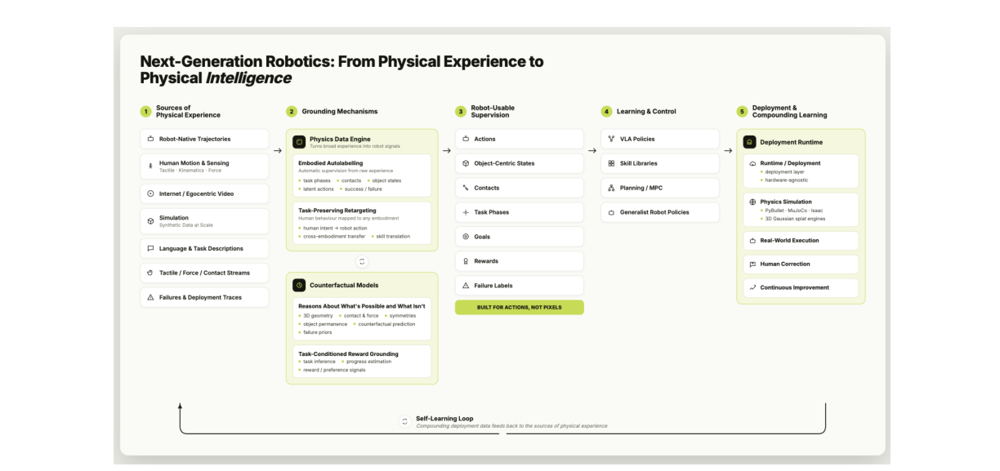

Background & Motivation
這是一篇立場文章(position paper)。它主張:通才機器人不只是「policy scaling」問題(蒐集更多示範、訓練更大的 VLA)。真正缺的是把世界上海量、雜亂的非結構化行為資料「接地(ground)」成機器人可用的監督。作者提出四種缺失的 interface:資料引擎、跨具身 retargeting、物理世界模型、獎勵接地。
A position paper. It argues that generalist robotics is not just a "policy-scaling" problem (collect more demos, train bigger VLAs). The real gap is grounding the world abundant, messy unstructured behavioural data into robot-usable supervision. The authors propose four missing interfaces: a data engine, cross-embodiment retargeting, physics world models, and reward grounding.
如果只有 30 秒In 30 seconds
- 問題 — 機器人迎來 foundation-model 時刻,卻沒有自己的「網際網路」:文字/影像天生數位化且帶人類監督,但物理互動資料缺機器人動作標籤、力訊號、任務語意、獎勵結構,大多無法直接用。
- Problem — Robotics has its foundation-model moment but no "internet" of its own: text/images are natively digitized with human supervision, yet physical-interaction data lacks robot action labels, force signals, task semantics, reward structure—mostly unusable directly.
- 主張 — 未來 pipeline 必須從「robot-data-centric」轉為 「grounding-centric」:從廣義物理經驗出發,經過「接地機制」產出機器人可用的動作、接觸、物體狀態、任務階段、目標、獎勵。VLA 只是這個堆疊裡的一層。
- Position — The future pipeline must shift from "robot-data-centric" to "grounding-centric": start from broad physical experience, pass it through grounding mechanisms that yield robot-usable actions, contacts, object states, task phases, goals, rewards. A VLA is just one layer in that stack.
- 提議 — 補上四根支柱:① 具身自動標註的物理資料引擎 ② 任務保留的跨具身 retargeting ③ 預測「後果」的物理世界模型 ④ 透過部署迴圈接地的任務獎勵。是研究議程,非實驗論文。
- Proposal — Add four pillars: ① a physical data engine for embodied autolabelling ② task-preserving cross-embodiment retargeting ③ physics world models that predict consequences ④ task reward grounding via deployment loops. It's a research agenda, not an empirical paper.
領域脈絡Field context
語言與視覺的進步靠「海量、天生數位化、密集帶人類監督」的資料。機器人不一樣:世界有大量行為資料,但機器人資料集不像文字語料——每條軌跡都得能物理執行、每個動作綁定特定身體、每次失敗都可能損壞硬體。於是「可用的機器人監督」相對於「世界上已存在的物理行為」少得可憐。
Progress in language and vision rode on data that is abundant, natively digitized, and densely human-supervised. Robotics is different: the world holds vast behavioural data, but a robot dataset is not a text corpus—every trajectory must be physically executable, every action is tied to a body, every failure can damage hardware. So "usable robot supervision" is tiny relative to the physical behaviour already in the world.
這篇刻意不照「資料來源」或「演算法家族」分類,而是照「機器人學習 pipeline」本身來組織。它把問題從「該訓哪種模型」重構成「需要哪些機制,才能讓世界的物理經驗變成機器人學得會的東西」——這是 position paper 最有價值的貢獻:換一個提問的方式。
It deliberately organizes not by "data source" or "algorithm family" but by the robot-learning pipeline itself. It reframes the question from "which model to train" to "which mechanisms are needed to make the world's physical experience learnable by robots"—the most valuable thing a position paper can do: change the question.
核心洞見 · KEY INSIGHTSKEY INSIGHTS
- 瓶頸是「接地」,不是「資料量」。 世界不缺物理行為,缺的是把它轉成機器人座標系下的變數(動作、接觸、物體狀態、任務階段、獎勵)的機制。重構問題本身就是貢獻。
- The bottleneck is "grounding," not "data volume." The world isn't short of physical behaviour; it lacks mechanisms to convert it into robot-frame variables (actions, contacts, object states, task phases, rewards). Reframing the problem is itself the contribution.
- VLA 是「一層」,不是「全部」。 把 VLA 放回一個更大的 physical-intelligence 堆疊裡:它是 policy interface,但仰賴上游(資料/具身/動力學)與下游(獎勵/部署回饋)的接地。
- A VLA is "one layer," not "everything." It places VLAs back into a larger physical-intelligence stack: a policy interface that depends on upstream (data/embodiment/dynamics) and downstream (reward/deployment feedback) grounding.
- 連失敗都是監督。 失敗的 rollout 不是壞軌跡,而是「哪個接觸沒抓到、哪個子目標沒達成」的證據;只要正確標註,失敗(例如掉了物體)甚至能變成未來有用的技能。
- Even failure is supervision. A failed rollout isn't a bad trajectory but evidence of "which contact was missed, which subgoal failed"; properly labelled, a failure (e.g. dropping an object) can even become a useful future skill.
- 穿戴式感測器 = 物理世界的「標註儀器」。 動捕/感測衣提供影像缺乏的結構訊號(身體姿態、手部軌跡、接觸、力),把一次人類示範變成「多個標籤」的來源,而不只是一段待模仿的影片。
- Wearable sensing = a "labelling instrument" for the physical world. Mocap/sensor suits give structured signals video lacks (body pose, hand trajectories, contacts, force), turning one human demo into a source of many labels—not just a video to imitate.
- 堆疊是「閉環」,不是「前饋」。 部署不只是評估;每次 rollout、失敗、人類修正都應接地成監督,回頭更新 policy、reward、world model、retargeting——讓能力「複利」累積。
- The stack is "closed-loop," not "feed-forward." Deployment isn't just evaluation; every rollout, failure, and human correction should be grounded into supervision that updates the policy, reward, world model, and retargeting—so competence compounds.
Problem Diagnosis
兩種 pipeline:現況 vs 主張Two pipelines: status quo vs the position
| 今天:robot-data-centricToday: robot-data-centric | 主張:grounding-centricProposed: grounding-centric | |
|---|---|---|
| 起點Start | 蒐集機器人示範collect robot demos | 廣義物理經驗(人類動作、影片、模擬、觸覺、語言)broad physical experience (human motion, video, sim, tactile, language) |
| 中段Middle | 貼任務/語言標籤 → 訓 policyattach task/language labels → train policy | 接地機制產出動作、接觸、物體狀態、任務階段、目標、獎勵grounding mechanisms produce actions, contacts, object states, phases, goals, rewards |
| 瓶頸Bottleneck | 硬體上評估 → 重複(貴、難擴展)evaluate on hardware → repeat (costly, hard to scale) | 把世界變成監督來源the world becomes a supervision source |
核心矛盾一句話:「最有效的監督,目前仍幾乎都得先被『接地』成機器人原生量(動作/觀測/任務/成敗)才有用」。問題不是「再多收一點機器人資料」,而是「如何讓更廣的物理經驗變得可用」。
The tension in one line: "the most effective supervision still largely becomes useful only after being grounded into robot-native quantities (actions/observations/tasks/success)." The question isn't "collect a bit more robot data," but "how to make broader physical experience usable."
Gap 表 — 每條研究線暴露的監督瓶頸Gap table — the supervision bottleneck each line exposes
| 研究線Line of work | 它證明了什麼What it shows | 暴露的缺口Gap exposed |
|---|---|---|
| 機器人原生資料集 / VLARobot-native datasets / VLA | 動作與任務標籤齊備時,policy 能擴展得很遠policy scales far when actions & task labels are already available | 依賴已接地的軌跡;蒐集貴、綁定具身depends on already-grounded trajectories; costly, embodiment-bound |
| 影片學習Learning from video | 世界有大量行為證據the world holds abundant behavioural evidence | 接地很弱:沒有動作、力、可靠的成敗weak grounding: no actions, forces, reliable success |
| 模擬 / 世界模型Simulation / world models | 經驗可以被「生成」experience can be generated | 只有保住物理後果時才有用useful only when physical consequences are preserved |
三條線都指向同一個結論:缺的不是又一個 policy 架構,而是把物理經驗轉成機器人可用監督的「那一層」。
All three point to the same conclusion: the missing piece isn't another policy architecture, but the layer that turns physical experience into robot-usable supervision.
The Proposed Framework
四個缺失的 interface(閉環堆疊)Four missing interfaces (a closed-loop stack)

把它寫成數學:從經驗到監督As math: from experience to supervision
一段原始經驗是異質、非同步的多模態串流(影片、動捕、觸覺/力、機器人日誌、語言):
A raw episode is a heterogeneous, asynchronous multimodal stream (video, mocap, tactile/force, robot logs, language):
因為串流不同步,第一個「隱藏變數」是對齊 \(A\),把各模態時間戳對到一條潛在事件時間軸 \(\{1,\dots,Z\}\)。每個事件 \(\zeta\) 要還原的結構是:
Because streams are asynchronous, the first hidden variable is an alignment \(A\) mapping each modality's timestamps to a latent event timeline \(\{1,\dots,Z\}\). The structure to recover per event \(\zeta\):
資料引擎就是一個推論模型 \(q_\theta(z,A\mid x)\):同時解時間對齊、事件切分、物體狀態、接觸推斷、階段辨識、潛在動作發現、獎勵接地、成敗預測——不只是感知。
The data engine is an inference model \(q_\theta(z,A\mid x)\): jointly solving temporal alignment, event segmentation, object-state estimation, contact inference, phase recognition, latent-action discovery, reward grounding, and outcome prediction—not mere perception.
Retargeting:對具身 \(e\) 求動作 \(a^{(e)}_\zeta=f_\psi(u_\zeta,s_\zeta,e)\),使其保留任務相關效果 \(\Delta_g(s_\zeta,a^{(e)}_\zeta)\approx\Delta_g(s_\zeta,u_\zeta)\)(這就是為何「對姿態」不夠)。
Retargeting: for embodiment \(e\), find \(a^{(e)}_\zeta=f_\psi(u_\zeta,s_\zeta,e)\) that preserves the task-relevant effect \(\Delta_g(s_\zeta,a^{(e)}_\zeta)\approx\Delta_g(s_\zeta,u_\zeta)\) (which is why pose-matching is insufficient).
世界模型:預測物理後果 \(s_{\zeta+1}\sim p_\omega(\cdot\mid s_\zeta,u_\zeta,g)\),且應任務條件化(只在任務相關的面向上預測得準)。
World model: predict physical consequences \(s_{\zeta+1}\sim p_\omega(\cdot\mid s_\zeta,u_\zeta,g)\), and it should be task-conditioned (accurate on what matters for the task).
獎勵:\(r_\eta(s_\zeta,g,\phi_\zeta)\)——同一個狀態在不同目標下意義不同(杯子放桌上,對「放下」是成功、對「拿起」是失敗)。
Reward: \(r_\eta(s_\zeta,g,\phi_\zeta)\)—the same state means different things under different goals (a cup on the table is success for "put down," failure for "pick up").
閉環:為何是「複利」The closed loop: why it "compounds"
關鍵是元件級的 credit assignment:失敗時要知道該更新哪一塊——動作差→更新 policy;後果預測錯→更新 world model;效果沒保留→更新 retargeting;成敗誤判→更新 reward model。否則只知道「失敗了」卻不知「該改什麼」。
The key is component-level credit assignment: on failure, know which part to update—bad action → policy; wrong consequence prediction → world model; effect not preserved → retargeting; misjudged success → reward model. Otherwise the system knows it failed but not what to change.
符號白話對照Symbols in plain words
| \(x\) | 一段原始異質經驗(影片+動捕+觸覺+日誌+語言)。A raw heterogeneous episode (video + mocap + tactile + logs + language). |
| \(A\) | 對齊:把各模態時間戳對到同一條潛在事件時間軸。Alignment: maps each modality's timestamps onto one latent event timeline. |
| \(z_\zeta\) | 事件 \(\zeta\) 的結構:物體狀態 \(s\)、接觸 \(c\)、任務階段 \(\phi\)、潛在動作 \(u\)、獎勵 \(r\)。Structure of event \(\zeta\): object state \(s\), contact \(c\), task phase \(\phi\), latent action \(u\), reward \(r\). |
| \(g,\;y\) | 整段的目標 \(g\) 與成敗標籤 \(y\)(成功/失敗/部分/不安全)。Episode goal \(g\) and outcome label \(y\) (success/failure/partial/unsafe). |
| \(q_\theta,f_\psi,p_\omega,r_\eta\) | 四根支柱:資料引擎、retargeting、世界模型、獎勵模型。The four pillars: data engine, retargeting, world model, reward model. |
| \(\Delta_g\) | 目標 \(g\) 下的「任務相關效果」(抽屜位移、物體姿態、對齊、接觸狀態…)。The "task-relevant effect" under goal \(g\) (drawer displacement, object pose, alignment, contact state…). |
Survey & Evidence
機器人原生監督:規模的證據Robot-native supervision: evidence of scale
| 資料集 / 系統Dataset / system | 規模(原文數字)Scale (as reported) |
|---|---|
| RoboNet | 15M 影格 · 7 個平台frames · 7 platforms |
| BridgeData V2 | 約 60k 操作軌跡 · 24 環境~60k manip. trajectories · 24 envs |
| DROID | 約 76k 軌跡 · 350 小時~76k trajectories · 350 hrs |
| RH20T | 110k+ 接觸豐富序列(視覺/力/音訊/動作)110k+ contact-rich seqs (vision/force/audio/action) |
| Open X-Embodiment / RT-X | 1M+ 軌跡 · 22 種具身1M+ trajectories · 22 embodiments |
| OpenVLA | 7B 參數 · 約 970k 真機示範7B params · ~970k real-robot demos |
證明了「資料多樣性 → 泛化」(RT-1/RT-2/Octo/π0…);但也坐實了瓶頸:最有效的監督仍以「已接地的機器人軌跡」形式到來。
Shows "data diversity → generalisation" (RT-1/RT-2/Octo/π0…); but also confirms the bottleneck: the most effective supervision still arrives as already-grounded robot trajectories.
把既有工作對到四根支柱Mapping existing work onto the four pillars
| Pillar | 既有方向(部分觸及)Existing directions (partial) | 還缺什麼Still missing |
|---|---|---|
| 1 Data | 影片學習、潛在動作、自動標註video learning, latent actions, autolabelling | 物理接地的聯合對齊/接觸/獎勵推斷a physically grounded joint alignment/contact/reward inference |
| 2 Embodiment | 人→機器人 retargeting、跨具身資料集human→robot retargeting, cross-embodiment data | 保留 \(\Delta_g\) 的任務效果層級遷移task-effect-level transfer preserving \(\Delta_g\) |
| 3 World Model | 影片生成、3D(點雲/NeRF/Gaussian splat)、力學模型video gen, 3D (point cloud/NeRF/splat), mechanics models | 混合式:3D+物體中心+物理約束+殘差動力學a hybrid: 3D + object-centric + physics constraints + residual dynamics |
| 4 Reward | 偏好建模、影片/語言成敗辨識preference modelling, video/language success detection | 綁定接觸/物體狀態/階段的任務條件化獎勵 + 元件級 credittask-conditioned reward tied to contacts/states/phases + component credit |
一句話總結:每根支柱都有人做了「一部分」,但沒有人把它們串成閉環、且全程物理接地。這正是作者主張的研究議程。
In one line: each pillar has partial work, but no one has wired them into a closed loop that stays physically grounded throughout. That gap is the proposed agenda.
Critical Reading
可被質疑的點Contestable points
- 框架 vs 可操作性:四個 interface 講得很清楚,但沒有任何一個被實作或量化。它告訴你「該蓋什麼」,沒告訴你「怎麼蓋、會不會成」。對工程團隊的可操作性有限。
- Framework vs actionability: the four interfaces are crisply stated, but none is implemented or quantified. It tells you "what to build," not "how, or whether it works." Limited actionability for an engineering team.
- 是新框架,還是重新貼標籤? 「資料引擎 / retargeting / 世界模型 / 獎勵」大致對應已知的感知標註、模仿遷移、model-based RL、reward learning。真正的新意是「強調全程物理接地 + 閉環」,但這是否足以稱為新範式,可議。
- New framework, or relabeling? "Data engine / retargeting / world model / reward" roughly map to known sub-fields—perception labelling, imitation transfer, model-based RL, reward learning. The genuine novelty is "insist on end-to-end physical grounding + a closed loop," but whether that warrants a new paradigm is debatable.
- 潛在利益關係:多數作者隸屬 Motoniq.ai,而全篇對穿戴式感測衣作為「物理世界標註儀器」著墨甚多。這個技術重點恰好會對應到某類商業產品方向。[導讀補充] 這是讀立場文章時值得留意的角度,非指控。
- Potential conflict of interest: most authors are affiliated with Motoniq.ai, and the paper dwells heavily on wearable sensing suits as a "labelling instrument for the physical world." That emphasis conveniently aligns with a class of commercial product directions. [guide note] A lens worth keeping when reading position papers, not an accusation.
- 接地本身會不會也是瓶頸? 把「policy 學習很難」換成「接地很難」——但聯合解對齊/接觸/階段/獎勵推斷,可能比訓練 policy 更難、更易出錯。論文沒談這個遞迴困難。
- Is grounding itself the bottleneck? It swaps "policy learning is hard" for "grounding is hard"—but jointly inferring alignment/contact/phase/reward may be harder and more error-prone than training a policy. The paper doesn't address this recursive difficulty.
給讀書會 / 審稿的犀利問題Sharp questions for a reading group / review
- 最小可行證據:能不能在一個任務上,端到端示範「人類影片 → 接地 → 跨具身 → 部署改進」,證明閉環真能複利?
- Minimal viable evidence: could you demonstrate end-to-end on one task—"human video → grounding → cross-embodiment → deployment improvement"—to show the loop actually compounds?
- 誤差會不會放大? 自動標註的錯誤標籤餵進 retargeting/world model/reward,是會被閉環修正,還是累積放大?
- Does error amplify? Wrong autolabels fed into retargeting/world-model/reward—does the loop correct them, or compound them?
- 利益關係:若不假設「人人都穿感測衣」,這套框架還站得住嗎?哪些部分依賴特定硬體?
- Conflict of interest: without assuming "everyone wears a sensor suit," does the framework still hold? Which parts depend on specific hardware?
- 可證偽性:這個立場有沒有可能被「未來證據」推翻?還是它寬到怎樣都對(因為四根支柱涵蓋了幾乎所有 robot learning)?
- Falsifiability: could future evidence refute this position? Or is it broad enough to always be "right" (since the four pillars cover almost all of robot learning)?
- 與 end-to-end 的對賭:若一個夠大的 VLA + 夠多資料就能隱式學會這些接地,模組化堆疊會不會反而是彎路?
- The bet against end-to-end: if a big-enough VLA + enough data implicitly learns this grounding, could the modular stack be a detour?
Takeaways
對你研究的啟發Implications for your research
- 「grounding-centric」是個好用的鏡片:做機器人/具身 AI 時,先問「我的監督是從哪裡接地來的?能不能從更廣的來源接地?」往往比「再換個 policy 架構」更有槓桿。
- "Grounding-centric" is a useful lens: in robotics / embodied AI, asking "where does my supervision get grounded from, and can I ground it from broader sources?" often has more leverage than "swap the policy architecture again."
- 「保留任務效果 \(\Delta_g\) 而非姿態」的觀點可遷移到任何「跨域遷移」問題:遷的應是對世界的效果,不是表面軌跡。
- "Preserve the task effect \(\Delta_g\), not the pose" transfers to any cross-domain transfer problem: transfer the effect on the world, not the surface trajectory.
- 閉環 + 元件級 credit assignment:任何「自我改進系統」都值得想清楚「失敗時該更新哪一塊」,而不是把整個系統當黑盒重訓。
- Closed loop + component-level credit assignment: any "self-improving system" should think hard about "which part to update on failure," rather than retraining the whole black box.
值得引用的點What's worth citing
| 當你要主張…When you claim… | 就引這篇Cite this for |
|---|---|
| 「機器人缺的是接地,不只是資料量」"robotics lacks grounding, not just data" | 作為 grounding-centric 框架的代表性立場。As a flagship statement of the grounding-centric framing. |
| 「VLA 是堆疊的一層」"a VLA is one layer in a stack" | 引其 physical-intelligence stack 的定位。Cite its physical-intelligence-stack positioning. |
| 機器人學習的研究議程綜述an agenda survey for robot learning | 引其對資料集/VLA/世界模型/獎勵的整理。Cite its survey of datasets/VLAs/world models/reward. |
通才機器人的瓶頸,可能不在「policy 不夠大」,而在「世界的物理經驗還沒被接地成機器人學得會的監督」。這篇把那個缺失的「接地層」拆成四根支柱、連成閉環——一張有用的路線圖,而非一個跑得動的系統。
The bottleneck for generalist robots may not be "policies aren't big enough" but "the world's physical experience isn't yet grounded into supervision robots can learn from." This paper splits that missing "grounding layer" into four pillars wired into a loop—a useful roadmap, not a runnable system.